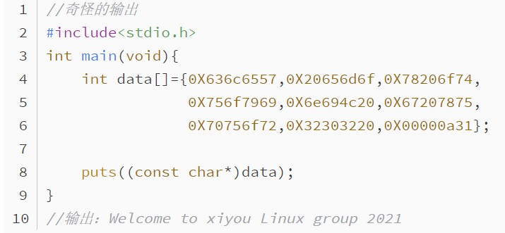
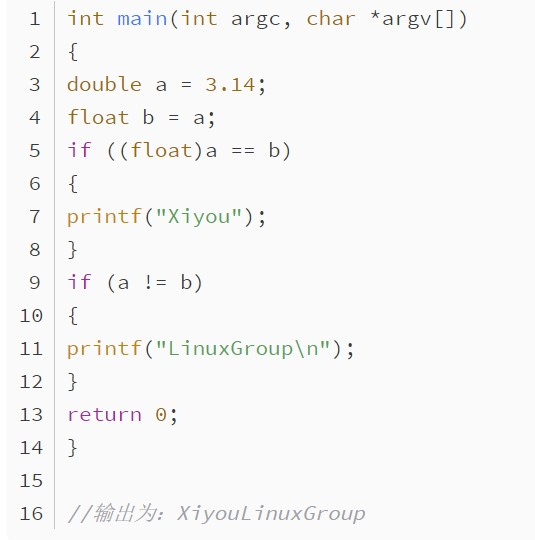
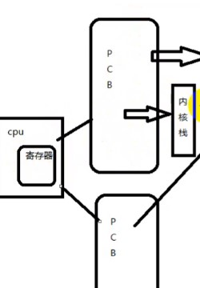

文章 C语言数据类型探索（1）  对于初涉C语言的人，看到题目，怎么也不会想到，输出竟然是完整的一句话。分析：数组为lnt类型，而输出时把该数组强制转换为char，int与char类型可相互转化，而0x代表16进制，这时我们看出端倪，即ASCII码,每两位对应一个字符，但为什么四个字符会有一个逗号呢？那是因为每个int元素开辟四个字节，而字符占一个字节。 为什么字符顺序是反的呢？ 查看全文 C语言数据类型的探索（2）  进行算术运算（加、减、乘、除、取余以及符号运算）时，不同类型数据必须转换成同 一类型的数据才能运算，算术转换原则为：整型提升：对于所有比int小的类型，包括char, signed char, unsigned char, short, unsigned short,首先会提升为int类型。在进行运算时，以表达式中最长类型为主，将其他类型位据均转换成该类型. 查看全文 把线程概念讲清  1.线程是一个轻量级进程(light-weight process)，也有PCB,创建线程使用的底层函数和进程一样，都是clone。2.从内核里看进程和线程是一样的，都有各自不同的PCB，但是PCB中指向内存资源的三级页表是相同的。 查看全文